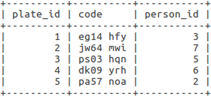

Table Relationships
In order to effectivly manage data multiple tables are used and when
tables shares data they become related to each other. There are a
number of different relationships tables can have between one another.
These include:
one to one (1-1)
one to many (1-M)
many to many (M-M)
one to one is when two tables share data but only
have a single matching record.

View full code to produce tables.
The previous example shows two tables. One of people and the other of
licence plate codes. These tables have a one to one relationship as
only one person can be the registered keeper of a car.
one to many is when one of the two tables involved in
a relationship will have multiple matching records while the other
will only have a single matching record.
View full code to produce tables.
The first table shown is a set of people who own one car, the second
is the possible brands of car they may own. As many people may own the
same brand of car rows in the brands table match to multiple people
but each person can only match to the brand of car they own.
many to many is when both tables have multiple
matching rows. In order to avoid duplicate records a junction table is
need.
View full code to produce tables.
In this example each person owns one or more cars. Due to this each row from the first two table can be matched multiple times. The third table, which has a one to many relationship with both of the other tables acts as a junction between the two to avoid duplicate records.
(Sources:
Head First SQL
tech recipes: One-to-One, One-to-Many Table Relationships in SQL
Server
Coding Notes: Understanding a SQL Junction Table
singingeels: Understanding SQL: Many to Many Relationships
)
Foreign Keys
Foreign keys are a way of creating a relationship between two tables.
They are references to columns in other tables which contain unique
values (commonly primary key but not always) and are used to ensure
columns only contains a single value (assit in making data atomic).
The following table will be used to provide examples.
View full code to produce table.
Foreign keys are created and assigned in a similar way to primary keys
during the creation of a table. The key word CONSTRAINT is used to
connect the tables and specify the column in the inital table which
the foreign key will draw from. Using this key word means the specified
column in the new table may only hold data found the specified column
of the inital table.
CREATE TABLE licence_plate(
plate_id INT NOT NULL AUTO_INCREMENT,
code CHAR(8),
person_id INT NOT NULL UNIQUE,
PRIMARY KEY(plate_id),
CONSTRAINT people_person_id_fk
FOREIGN KEY (person_id)
REFERENCES people (person_id)
);
The keyword UNIQUE was used on person_id as in this case the
person should not be duplicated in this column. This is not always
required and depends on the relationship.
CONSTRAINT people_person_id_fk FOREIGN KEY (person_id)
REFERENCES people (person_id) - This set of statments is one line,
if multiple foreign keys were needed a comma should be placed
at the end and a new CONSTRAINT, FOREIGN KEY and REFERENCES should
be defined for the next foreign key. The order should also be
maintained.
Once the table is created we can add values based on the other table.
View full code to produce table.
The relationship between these two tables is known as a one to one. View the Table Relationships sections for more.
(Sources:
Head First SQL
stackoverflow: What is atomicity in dbms
)
LIMIT
The keyword LIMIT is used to limit and control the number of results
returned and from which row to begin returning results from. LIMIT can
be given a single parameter or two parameters.
A single parameter
determines how many rows, starting from and including the first, to
return. Two parameter provides more control. The first defines the
start position (the first row in the table is position 0) and the
seconds states how many rows, including the first, to return.
The following table will be used to provide examples.
View full code to produce table.
SELECT first_name, last_name, age FROM people ORDER BY age LIMIT 3;
SELECT first_name, last_name, age FROM people ORDER BY age LIMIT 3, 3;
DISTINCT
The keyword DISTINCT is used to identify unique sets of data in a
column.
The following table will be used to provide examples.
View full code to produce table.
SELECT DISTINCT hemisphere FROM populations;
SELECT COUNT(DISTINCT hemisphere) FROM populations;
Aggregate Functions
Aggregate functions take all the values returned by a select
statment and combine them in different ways, depending on the function
used.
The following table will be used to provide examples.
View full code to produce table.
SUM(column_name): Adds all returned values.
SELECT SUM(population_per_million) FROM populations;
AVG(column_name): Finds the mean average of all the provided values.
SELECT AVG(population_per_million) FROM populations;
MIN(column_name): Finds the smallest of all the provided values.
SELECT MIN(population_per_million) FROM populations;
MAX(column_name): Finds the largest of all the provided values.
SELECT MAX(population_per_million) FROM populations;
COUNT(column_name): counts the number of rows in a column
(null values do not count).
SELECT COUNT(population_per_million) FROM populations;
The GROUP BY statment is used along side aggregate functions to find
outputs produced by certain defined groups of data rather than the
ouput produced by all data in a column.
SELECT hemisphere, SUM(population_per_million) FROM populations GROUP BY
hemisphere;
SELECT hemisphere, COUNT(population_per_million) FROM populations GROUP BY hemisphere;
(Sources:
Head First SQL
sqlcourse2: Aggregate Functions
)
UPDATE with CASE
The key word CASE can be used with UPDATE in order to update a number
of recorders based on different conditions.
The following table will be used to provide examples.
View full code to produce table.
Case combines multiple update statments into one larger statment. When
the condition is met the row to be updated is given the corosponding
value. If multiple conditions equate to true the first in the list of
WHEN statments will be used and if no condition is met the value
matched with the ELSE statment is used (ELSE is optional).
UPDATE people
SET stage_of_life = CASE
WHEN age BETWEEN 0 AND 1 THEN 'baby'
WHEN age BETWEEN 2 AND 17 THEN 'child'
WHEN age >= 18 THEN 'adult'
ELSE 'not alive'
END;
(Sources:
Head First SQL)
String Functions
String function are used in sql to manipulate input and return a new
output. Only a few are shown here to give an example of how string
functions are used with SELECT, UPDATE and DELETE. For a longer list
view this
pdf or
website.
The following table will be used to provide examples. Any changes made
to the table will carry to the next example.

View full code to produce table.
LENGTH(string): used to return the length of a string;
SELECT LENGTH(first_name) FROM people;

LOCATE(stringToFind, stringToCheck): used to find the first index at
which stringToFind occurs in stringToCheck (first char is in position
1 not 0).
SELECT LOCATE('r', first_name) FROM people;
SUBSTRING_INDEX(stringToUse, stringToLocate, occuranceToUse):
used to return a substring of stringToUse. The returned string
will contain all characters prior to the nth occurance
(as specified by occuranceToUse) of stringToLocate.
If stringToLocate is not found in stringToAlter the entire string is
returned (unless other conditions are also stated as in the example).
SELECT SUBSTRING_INDEX(first_name, 'r', 1) FROM people WHERE LOCATE('r', first_name) > 0;
UPPER(stringToUse): Make all characters upper case.
UPDATE people SET last_name = UPPER(last_name) WHERE LENGTH(last_name) >= 6;

RIGHT(stringToUse, numberOfChars): Returns a string containing the
right most characters. The number of characters returned depends on
numberOfChars.
REVERSE(stringToUse): Returns the given string with all characters in
reverse order.
DELETE FROM people WHERE RIGHT(REVERSE(first_name), 1) = 'm';
(Sources:
Head First SQL
tutorialspoint: SQL - String Functions
)
ALTER
The key word alter is used to make changes to all aspects of a table.
The following table will be used to provide examples. Any changes made
to the table will carry to the next example.

View the code to make the table.
Change the name of the table:
ALTER TABLE peeps RENAME TO people;
Add new columns onto the table:
ALTER TABLE people ADD COLUMN phone_number VARCHAR(11);
Add new columns onto the table and control their position:
ALTER TABLE people ADD COLUMN person_number INT FIRST;
In place of FIRST the key words LAST, BEFORE and AFTER may be
used.
Make changes to existing columns:
ALTER TABLE people
CHANGE COLUMN person_number person_id INT NOT NULL AUTO_INCREMENT,
ADD PRIMARY KEY (person_id);
Modify existing columns:
ALTER TABLE people MODIFY COLUMN phone_number INT(11);
Drop column from the table:
ALTER TABLE people DROP COLUMN phone_number;
Commands may also be chained together:
ALTER TABLE people
CHANGE COLUMN f_name first_name VARCHAR(50),
CHANGE COLUMN l_name last_name VARCHAR(50);
The resultant table after these commands is shown below.
(Sources:
Head First sql)
Composite Keys
A composite key is the use of two or more columns, which when combined
are unique in the table, to identify each row. The columns that make up
the composite key are together a primary key.
CREATE TABLE people(
first_name VARCHAR(50),
middle_name VARCHAR(50),
last_name VARCHAR(50),
age INT,
gender VARCHAR(1),
PRIMARY KEY (first_name, middle_name, last_name)
);
View full code to produce table.
The previous table combines the columns first_name, middle_name and
last name into a primary key as, while each column containes duplicate
values a combination of the three values contained in each row is
unique.
(Sources:
Head First SQL
techopedia: Composite Key
stackoverflow: How can I define a composite primary key in SQL?
)
Primary Keys
Primary keys act as unique identifiers for each row in a table. The
column that holds the primary key can be created for that purpose
alone or an already existing column that will never have duplicate
values can act as the primary key.
The following shows how to assign a column as the primary key and how
to ensure each value is unique.
CREATE TABLE people(
person_id INT NOT NULL AUTO_INCREMENT,
first_name VARCHAR(50),
last_name VARCHAR(50),
age INT,
gender VARCHAR(1),
PRIMARY KEY (person_id)
);
View full code to produce table.
The primary key can also be designated as shown below
CREATE TABLE new_table(
id INT NOT NULL AUTO_INCREMENT PRIMARY KEY,
);
(Sources:
Head First SQL)
WHERE Clause and Conditional Operators
The following table will be used to provide examples.
View full code to produce table.
The keyword WHERE and Conditional operators in SQL are used alongside
SELECT, UPDATE and DELETE in order to created conditions and control
which rows are returned or altered.
SELECT first_name, last_name FROM people WHERE age=22;

Multiple conditions can be combined using the operators AND / OR.
SELECT first_name, last_name FROM people WHERE age=22 AND gender='f';

SELECT first_name, last_name FROM people WHERE age=22 OR last_name='Lenart';

Equals (=) is not the only available comparison operator. Common ones
include:
<: Less than
>: Greater than
<=: Less than or equal to
>=: Greater than or equal to
<>: Not equal
!= is also an operator for not equal to but it is not defined in
the ANSI 99 SQL standard and so some platforms may not support it.
Another comparison operator is the LIKE keyword. When used it returns
results that are similar to the condition given. It is commonly used
alongside wild card characters such as %(acts as any number of
characters) or _(acts as a single unknown character).
SELECT * FROM people WHERE first_name LIKE '%a';

SELECT * FROM people WHERE first_name LIKE 'M%';

SELECT * FROM people WHERE last_name LIKE '_leek';
SELECT * FROM people WHERE last_name LIKE 'Sho_man';

Another comparison operator is BETWEEN, which finds all rows within
a stated range.
SELECT first_name, age FROM people WHERE age BETWEEN 40 AND 90;

The comparison operator IN can be ued in place of multiple OR
statments.
SELECT first_name, last_name FROM people WHERE last_name IN
('Tanouye', 'Smith', 'Frisina');

The comparison operator NOT is used to find all rows which do not
match the given condition.
SELECT first_name, age FROM people WHERE NOT age BETWEEN 40
AND 90;
SELECT first_name, last_name FROM people WHERE NOT last_name IN ('Tanouye', 'Smith', 'Frisina');
(Sources:
Head First SQL
stackoverflow: What is difference between != and <> in sql server
ANSI/ISO/IEC International Standard(IS) Database Language SQL —
Part 2: Foundation (SQL/Foundation)
NOT NULL & DEFAULT
NOT NULL is used while creating a table to ensure a column can never
hold a null value. If this is used a value must always be given to
the specified column when insert is called. When DESC is used on a
table it is possible to see (in the third column) if a column can
hold a null value.
CREATE TABLE people(
first_name VARCHAR(50) NOT NULL,
last_name VARCHAR(50) NOT NULL
);
To ensure a NOT NULL column always has a value DEFAULT can also be
used during table creation. If a value is not given while inserting
data the provided default value will be used.
CREATE TABLE people(
first_name VARCHAR(50) NOT NULL,
last_name VARCHAR(50) NOT NULL DEFAULT 'Smith'
);
(Sources:
Head First SQL)
Data types
SQL data types
- CHAR(length) / CHARACTER(length): Accepts a fixed length character string. A value with a length less that the given parameter will have blank characters added onto it. Values must be surrounded by single or double quotes.
- VARCHAR(length): Accepts a variable length character string. Values must be surrounded by single or double quotes.
- Boolean: Holds a boolean value. When inserting data use TRUE or FALSE.
- INT / INTEGER: Takes a 4 byte / 32 bit whole number. As well as INT there is TINYINT(8 bit), SMALLINT(16 bit) and BIGINT(64 bit).
-
DEC(totalDigitCount, digitsAfterDecimal) /
DECIMAL(totalDigitCount, digitsAfterDecimal) /
NUMERIC(totalDigitCount, digitsAfterDecimal) : Accepts whole and non whole numbers. The number to the left of the decimal may have any number of digits, but it will be rounded to match th value of digitsAfterDecimal. The number to the right of the decimal must have a digit count equal to or less than totalDigitCount - digitsAfterDecimal.
DEC(5, 3)
12.345 pass
1.23 pass
1.2345 pass but rounded to 1.235
123.45 fail - REAL: Holds a single precision floating point number (32 bit approximation of a real number). All numbers containing 6 deciaml digits or fewer can be converted to a floating point value without loss of precision.
- DOUBLE: Holds a double precision floating point number (64 bit approximation of a real number). All numbers containing 15 deciaml digits or fewer can be converted to a floating point value without loss of precision.
- FLOAT(precision): Holds a floating point number with a user defined precision with a max of 64.
- BLOB(length) / BINARY LARGE OBJECT(length): Stored binary values up to a max size of 2GB.
- DATE: Accept date values surrounded by single quotes and in the format of DATE'YYYY-MM-DD' or 'YYYY-MM-DD'. Year can be values between 0-9999. Month can be values between 1-12. Day can be values between 1-31.
- TIME: Accept time values surrounded by single quotes and in the format of TIME'HH:MM:SS', 'HH:MM:SS', TIME'HH:MM:SS.NN' or 'HH:MM:SS.NN' (NN == nano seconds). Hour can be values between 0-23. Minute can be values between 0-59. Seconds can be values between 0-61.9999. TIME can accept DATE values but DATE must precede the value. The value input into the table will be 00:00:00.
- TIMESTAMP: Accepts both date and time values surrounded by single quotes and in the format of TIMESTAMP'YYYY-MM-DD HH:MM:SS', 'YYYY-MM-DD HH:MM:SS', TIMESTAMP'YYYY-MM-DD HH:MM:SS.NN' or 'YYYY-MM-DD HH:MM:SS.NN' (NN == nano seconds). Acceptable values can be found in the DATE and TIME sections.
(Sources:
Head First SQL
toronto.edu: SQL Data Types
stackoverflow: SQL Real vs Float
Ispirer SQLWays Database Migration Software
Wikipedia: Single-precision floating-point format
Wikipedia: Double-precision floating-point format
)
Basic SQL and the RDBMS
Access the SQL shell (assuming sql is installed):
mysql -u root -p
Create a new database:
CREATE DATABASE my_database;
Access the database:
USE my_database;
Create a new table in the database:
CREATE TABLE people(
first_name VARCHAR(50),
last_name VARCHAR(50),
age INT,
gender VARCHAR(1)
);
View table details:
DESC people;
Insert data into table:
In the first insert example not all column must be named, only
the ones to be used. In the second example as the column names are
omitted data must be provided for all columns in the correct order.
INSERT INTO people (first_name, last_name, age, gender)
VALUES('Samantha', 'Herring', 25, 'f');
or
INSERT INTO people VALUES('Samantha', 'Herring', 25, 'f');
Query and return data from the table.
SELECT * FROM people;
Set the order of the results returned.
To reverse orders DESC must be used but ASC is the default setting
SELECT * FROM people ORDER BY age;
SELECT * FROM people ORDER BY gender ASC, age DESC;
Update rows.
UPDATE people SET age = 26 WHERE last_name = 'Herring';
Delete specific rows:
DELETE FROM people WHERE age = 26;
Delete all rows:
DELETE FROM people;
Delete table:
DROP TABLE people;
Delete database:
DROP DATABASE my_database;
(Sources:
Head First SQL)